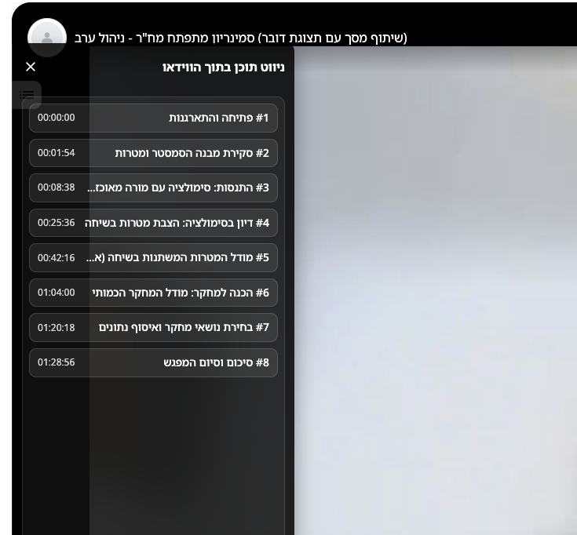
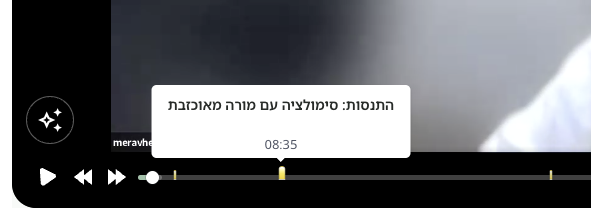
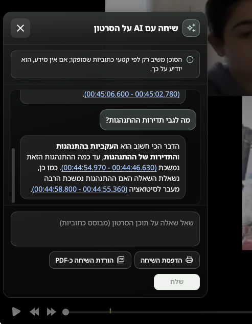

חלק א׳ – נושאי ניווט אוטומטיים מכתוביות
נושאי ניווט (פרקים) הם נקודות זמן עם שם, שמאפשרות לצופים לקפוץ לחלקים בווידאו. ניתן להוסיף אותם ידנית (ראו מדריך נושאים בסרטון). כאן נסביר את הכפתור יצירת נושאי ניווט אוטומטית מכתוביות במסך הגדרות הסרטון (עריכת סרטון).
איפה נמצא הכפתור
- פתחו את הגדרות הסרטון (עריכה) לסרטון הרצוי.
- גללו לקטע בינה מלאכותית AI (מתחת לכתוביות).
- יופיע כפתור עם אייקון ניצוצות: יצירת נושאי ניווט אוטומטית מכתוביות – רק כשהתנאים למטה מתקיימים.
תנאים כדי שהכפתור יופיע ויעבוד
- הסרטון לא מסוג YouTube בלבד (לסרטונים שהועלו למערכת / מקורות נתמכים).
- תמלול/כתוביות במצב מוכן (כמו לעריכת כתוביות).
- קיים טקסט כתוביות שמספיק עשיר כדי לבנות ממנו פרקים.
- בהגדרות המערכת הוגדרו מפתח OpenRouter ומודל (אזור כתוביות / בינה מלאכותית בהגדרות המערכת – ראו מדריך הגדרות מערכת).
מה קורה בלחיצה
- נפתח חלון (מודאל) עם הסבר קצר ועם תיבת סימון להחליף נושאי ניווט קיימים.
- כשמסמנים «להחליף» – הנושאים הקיימים יימחקו ויוחלפו בחדשים. כשמבטלים – הנושאים החדשים יתווספו לרשימה הקיימת (בלי למחוק ידנית).
- לחיצה על צור נושאי ניווט שולחת בקשה לשרת. המערכת שולחת ל־AI דגימה מהכתוביות (כולל חותמות זמן) ובוחנת את אורך הסרטון.
- המודל מחזיר רשימת פרקים (כותרת + זמן התחלה בשניות). המערכת בודקת שהמבנה הגיוני (כיסוי לאורך הסרטון, מספר פרקים מינימלי לפי אורך, וכו׳). אם התשובה לא תקינה – תוצג הודעת שגיאה; אפשר לנסות שוב.
- בהצלחה – הדף נטען מחדש ותראו את הנושאים ברשימת הנושאים / בנגן.
כמה פרקים נוצרים
בדרך כלל בין 2 ל־10 פרקים, לפי אורך הסרטון ותוכן הכתוביות. המערכת דורשת פרקים שמכסים את רוב ציר הזמן (לא רק תחילת הסרטון). אם הסרטון קצר מאוד – ייתכן מספר קטן יותר.
ניווט תוכן ורשימת נושאים – דוגמה מתוך הטמעה (embed)
אחרי שנוצרו נושאים, הצופים פותחים מהנגן את ניווט התוכן בתוך הווידאו – רשימת פרקים עם זמנים וקפיצה לנקודת הזמן. זה זמין גם בעמוד צפייה וגם במצב embed (כאשר הנגן מוטמע באתר או ב־LMS). להלן צילום מסך מתוך תצוגת הטמעה.

סימוני נושאים בבר ההתקדמות ו־tooltip
כשיש נושאי ניווט, מופיעים על בר ההתקדמות סימונים (סרגלים צהובים) בנקודות הזמן של כל פרק. מרחפים עם העכבר מעל סימון – נפתח tooltip עם שם הנושא וזמן ההתחלה, בלי לעצור את הצפייה. לחיצה על הסימון או על אזור הסרגל קופצת לזמן המתאים (כמו בעמוד צפייה ובהטמעה, לפי התמיכה במכשיר).

יצירה אוטומטית ברקע (אחים / קבוצת סרטונים)
כאשר תמלול מוכן, לעיתים המערכת מנסה לייצר נושאים אוטומטית גם לסרטונים «אחים» (אותה קבוצת העלאה) שעדיין אין להם נושאים – כדי לחסוך עבודה כשמפרסמים סדרת שיעורים. אם אין מפתח API או שהיצירה נכשלת, הפעולה מדולגת ונרשמת ביומן השרת.
חלק ב׳ – שיחה עם AI על הסרטון
בעמוד צפייה בסרטון, מתחת לתיאור, ייתכן שיופיע בלוק שיחה עם AI על הסרטון. העוזר משיב רק לפי קטעי כתוביות שהועברו אליו – אם אין מידע בכתוביות הוא אמור להגיד זאת במפורש.
מתי הבלוק מופיע
- תמלול במצב מוכן ויש מקור כתוביות שמתאים לשיחת AI.
- בהגדרות המערכת מוגדר מפתח OpenRouter (כמו לנושאי הניווט האוטומטיים).
התחברות
כדי לשלוח הודעות צריך להיות מחוברים למערכת. אורחים רואים הסבר והפניה להתחברות.
איך משתמשים
- כתבו שאלה בשדה הטקסט (אפשר Enter לשליחה; Shift+Enter לשורה חדשה).
- לחצו שלח. מופיע מצב «חושב…» עד שהתשובה מגיעה.
- בתשובות של העוזר, לעיתים מופיעים טווחי זמן בסוגריים (למשל לפי כתוביות). לחיצה על טווח או על שורה ממוספרת יכולה לקפוץ לזמן המתאים בנגן (במחשב ובמכשירים נתמכים).
- הדפסת השיחה – פותחת חלון הדפסה עם תוכן השיחה בפורמט קריא (אפשר לשמור כ־PDF מתפריט המדפסת של הדפדפן).
- הורדת השיחה כ־PDF – מוריד קובץ PDF שנוצר בשרת (אותו תוכן כמו בהדפסה, כולל עברית).
שיחת AI בהטמעה (embed)
אם מנהל המערכת הפעיל בהגדרות המתקדמות את האפשרות הצג כפתור שיחת AI מעל הנגן בהטמעה (embed), יופיע כפתור צף על גבי הנגן רק במצב embed רגיל (לא במצב reels). לחיצה פותחת פאנל עם אותה שיחה כמו בעמוד הצפייה. נדרשת התחברות (או JWT בהטמעה ממודל – לפי ההגדרה אצלכם).

אם הדפסה נחסמת בדפדפן בתוך iframe (למשל בלוק Moodle), נסו לאפשר חלונות קופצים (pop-ups) לאתר הסרטונים, או לבקש ממנהל Moodle להרשות pop-ups / allow-popups בהטמעה (תלוי בתבנית וב־sandbox של ה־iframe).